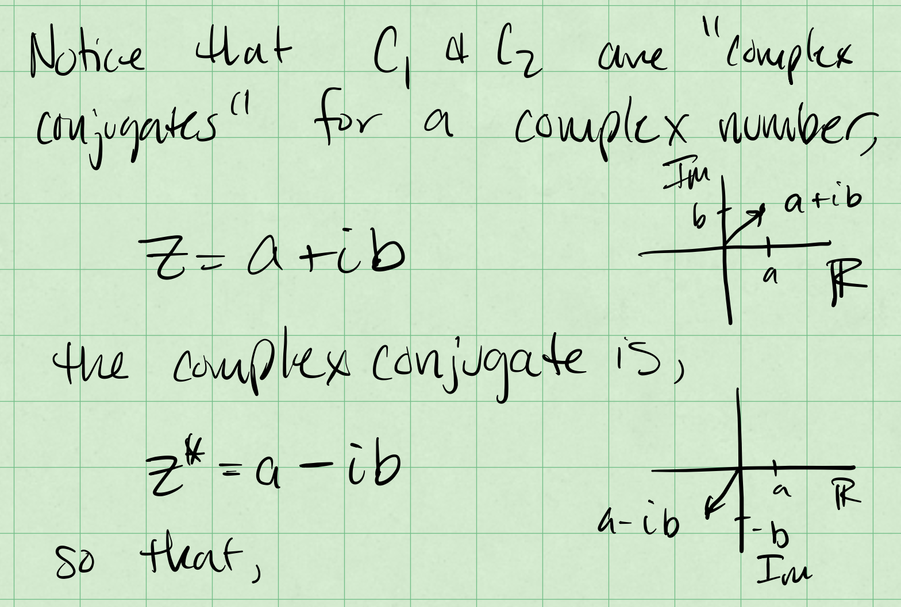

Week 8 - Notes: Oscillators and Modeling Oscillations#
We continue our study of physics phenomena that exhibits recurrent or periodic behavior. Some systems repeat their motion in a regular pattern, and we call them oscillators.
We have met this behavior many times. This is because we often look at the behavior of stems just a little bit away from equilibrium. Systems with local stable equilibria will have oscillatory behavior in a region around that equilibrium point. Note below the made up example of a potential energy function that has local minima and maxima.
Near the local minima, the system will oscillate back and forth. The potential energy function will look like a parabola.
## Make a plot of a potential energy function with 3 local minima
import numpy as np
import matplotlib.pyplot as plt
plt.style.use('seaborn-v0_8-colorblind')
x = np.linspace(-2, 2, 100)
U = x**6 - 2*x**3 - 10*x**2 + x
plt.plot(x, U)
plt.xlabel('x')
plt.ylabel('Potential Energy')
plt.title('Potential Energy Function')
plt.grid(True)
plt.tight_layout()
plt.show()
Why do we often see oscillations in physics?#
Oscillatory behavior is common in physics because many systems have a stable equilibrium point. When we disturb the system from equilibrium, it will oscillate back and forth around that equilibrium point. Let’s assume there’s a given stable equilibrium point at \(x=a\), we can write the potential energy function as a Taylor series expansion around that point:
The linear term is zero because the equilibrium point is a minimum, \(\dfrac{dU}{dx}\bigg|_{x=a}=0\). The quadratic term is remains as does the constant term. So up to the quadratic term, the potential energy function is a parabola.
We can write the value of the second derivative as a constant \(k\). It will just be the measure of the concavity of the potential energy function at the equilibrium point. So near \(x=a\), the potential energy function will look like a parabola of the form:
Because only changes in potential energy are important, we can ignore the constant term \(U(a)\). The change in potential energy is then:
This is just the change in potential energy for any spring-mass system (any SHO) if \(k>0\).
The Exact Solution for the Simple Harmonic Oscillator#
This potential \(U=\frac{1}{2}kx^2\) is the potential for the simple harmonic oscillator when \(k>0\) and we are modeling around a stable critical point. We know that this potential energy will produce a restoring force.
Thus our equation of motion is:
Or
The natural oscillation frequency of the SHO is:
And thus we obtain several forms of their general solution:
Where \(A\), \(B\), \(C\), \(D\), and \(\phi\) are constants that depend on the initial conditions of the system. The phase \(\phi\) is the phase angle of the oscillation. Each solution is equivalent to the others and can be written as the other form. And each solution has two arbitrary constants that depend on the initial conditions of the system.
Complex forms of the SHO solution#
These forms are useful, but often lead to more complex algebra. We can write the solution in terms of complex exponentials, which have the advantage of simplifying the algebra. Let’s try a complex form of the solution:
Take its derivatives:
Note that \(e^{-i\omega t}\) is also a solution to the differential equation that will produce this same result. So the general solution is the linear combination of these two solutions:
where \(C_1\) and \(C_2\) are constants that depend on the initial conditions of the system and can be complex. We still have two arbitrary constants that depend on the initial conditions of the system, which is needed for a second-order differential equation.
But the solution to the motion of the SHO is real!#
Yes, that is true. The solution must be a real function of time. This puts conditions on the constants \(C_1\) and \(C_2\). Using the Euler formula:
we can apply this to the functional form of the solution, such that,
Applying this to the general solution:
We grouped the terms in the last line to define some constants \(B_1\) and \(B_2\):
So that,
But \(B_1\) and \(B_2\) must be real because the rest of the solution is real. What does that mean? Let’s write \(C_1\) and \(C_2\) in terms of \(B_1\) and \(B_2\):
Complex Conjugates#
These values of \(C_1\) and \(C_2\) are the complex conjugates of each other. The complex conjugate of a complex number \(z=a+ib\) is \(z^*=a-ib\). The complex conjugate of a complex number is the same as the original number, but with the sign of the imaginary part reversed.
We can draw these in the complex plane where the \(x\)-axis is the real part and the \(y\)-axis is the imaginary part.

In the graph we can see that the complex conjugates are a reflection of each other. This is because the imaginary part of the complex conjugate is the negative of the original imaginary part.
The mathematics is quite useful for us. Consider the produce of two complex conjugates:
So that,
The product of a complex number and its complex conjugate is always a real number. Moreover, we can define the magnitude of a complex number as:
which is also real! Given that \(C_1\) and \(C_2\) are complex conjugates (\(C_2 = C_1^*\)), we can write the general solution to the SHO as:
What does that mean for the SHO?#
There’s a few more mathematical properties for complex conjugates that are useful for the SHO. The general solution to the SHO is. Let:
So that,
We denote the Real Part of a complex number as \(Re(z)\) and the Imaginary Part as \(Im(z)\). So that,
The real and imaginary parts of a complex number are real numbers. We can apply these properties to the general solution of the SHO:
let \(C = 2C_1\) so that,
This must be equal to a real function of time. For example,
which we can write as,
Thus,
This is a bit abstract, but let’s try to graph this and make it a bit concrete. Below, we’ve plotted the solution to an oscillator that starts with a \(\delta = \pi/4\) phase shift. The solution is plotted in the complex plane with rainbow colors to demonstrate time (from violet to red). The starting point is marked with a black square, and because the \(omega\) is positive, the solution moves counter-clockwise in the plane.
Below that we trace the real part of the solution in the \(t\)-\(x\) plane. This is not the same as a readout on something like an oscilloscope, or a time trace of the solution. But we can rotate the graph to be in the \(x\)-\(t\) plane - and thus a real temporal solution. In all cases, the black square marks the starting point of the solution, and the rainbow of points marks the solution as it moves in time.
import numpy as np
import matplotlib.pyplot as plt
from matplotlib import cm
plt.style.use('seaborn-v0_8-colorblind')
C1 = 1
delta = np.pi/4
omega = 1
t = np.linspace(0, 2*np.pi, 100)
x = C1*np.exp(1j*(omega*t - delta))
## Plot the trajectory in the complex plane
fig, ax = plt.subplots(1,1, figsize=(6, 6))
plt.scatter(x.real, x.imag, c=t, cmap=cm.rainbow, s=15)
plt.plot(x.real[0], x.imag[0], 'ks', markersize=15, label='Start')
plt.axhline(0, color='k', lw=2)
plt.axvline(0, color='k', lw=2)
plt.grid()
plt.xlabel('Real Part')
plt.ylabel('Imaginary Part')
plt.tight_layout()
## Plot the trajectory in the t-x plane
fig, ax = plt.subplots(1,1, figsize=(6, 6))
plt.scatter(x.real, t, c=t, cmap=cm.rainbow, s=15, label='Real Part')
plt.plot(x.real[0], t[0], 'ks', markersize=15, label='Start')
plt.axvline(0, color='k', lw=2)
plt.grid()
plt.xlabel('x')
plt.ylabel('t', rotation=0)
plt.tight_layout()
# Plot the trajectory in the x-t plane
fig, ax = plt.subplots(1,1, figsize=(6, 6))
plt.scatter(t, x.real, c=t, cmap=cm.rainbow, s=15, label='Real Part')
plt.plot(t[0], x.real[0], 'ks', markersize=15, label='Start')
plt.axhline(0, color='k', lw=2)
plt.grid()
plt.xlabel('t')
plt.ylabel('x', rotation=0)
plt.tight_layout()
Damped Oscillations#
The firs complication we can add to an oscillator is a bit of damping, or friction. It’s common to see this in real systems. Here, we add a force that removes energy from the system. This is often modeled as a force that is proportional to the velocity of the system: $\(F_{damping} = -b\dot{x}\)$
where \(b\) is a constant that depends on the system. The equation of motion is then:
or, rearranging terms,
Common simplifications#
We often rewrite the equation in terms of \(\ddot{x}\):
And then we define a few constants:
Thus we obtain:
This is a second order, linear ODE, so if we find a solution, and it first our initial conditions, we can be sure it is the solution to the problem.
Uniqueness of the solution
Linear ODEs have a very nice property: if you find a solution to the ODE, and it satisfies the initial conditions, then it is the unique solution to the problem. This stems from the Picard-Lindelöf theorem.
That is you are guaranteed that if you find a solution, you can be sure it is the only solution.
There’s a caveat to this, if you find multiple solutions and they are different, then your solution is the linear combination of those solutions.
We will exploit this property frequently.
Finding the solution#
Let’s assume a solution of the form and see where that gets us:
So that the derivatives are:
Substituting these into the ODE gives us:
We can factor out the \(e^{r t}\) term:
Except for the trivial case of \(e^{r t} = 0\), we can divide both sides by \(e^{r t}\):
This is the so called Auxilary Equation. This is a quadratic equation in \(r\) and we can solve it using the quadratic formula:
So that we obtain two roots:
As uniqueness guides us, we can write the general solution as a linear combination of the two solutions:
Where \(A\) and \(B\) are constants that depend on the initial conditions of the system.
In full detail that solution is:
Case Studies of Damped Oscillations#
Let’s look a the three cases of damping. We can classify the system based on the value of \(\beta\) and \(\omega_0\).
No Damping \(\beta=0\)#
This is just the case of the SHO. The solution is:
This is the same solution we had before. The system oscillates with a frequency \(\omega_0\) and the amplitude is constant.
Weak Damping \(\beta^2 < \omega_0^2\)#
Technically, weak means \(\beta^2 \ll \omega_0^2\), but whatever. Let’s just work this out:
So that
We introduce a new frequency \(\omega_1 = \sqrt{\omega_0^2 - \beta^2}\), which is different from the natural frequency \(\omega_0\). The solution is:
So that with a change to \(\omega_1\) we have:
Or an equivalent form:
This is an oscillator with a decay envelope that is decaying according to the factor \(e^{-\beta t}\). We can graph it.
This is what we call an underdamped oscillator. The system oscillates with a frequency \(\omega_1\) and the amplitude decays exponentially with time.
import numpy as np
import matplotlib.pyplot as plt
plt.style.use('seaborn-v0_8-colorblind')
A = 1
beta = 0.5
omega = 10
omega1 = np.sqrt(omega**2 - beta**2)
t = np.linspace(0, 2*np.pi, 1000)
x = A*np.exp(-beta*t)*np.cos(omega1*t)
upper_envelope = A*np.exp(-beta*t)
lower_envelope = -A*np.exp(-beta*t)
plt.plot(t, x, 'C0', label='Underdamped Oscillation')
plt.plot(t, upper_envelope, 'C1--', label='Upper Envelope')
plt.plot(t, lower_envelope, 'C1--', label='Lower Envelope')
plt.axhline(0, color='k', lw=2)
plt.xlabel('Time')
plt.ylabel('Displacement')
plt.title('Damped Oscillation with Decay Envelope shown')
#plt.legend()
plt.grid()
plt.tight_layout()
plt.show()
Strong Damping \(\beta^2 > \omega_0^2\)#
Again, the assumption is really \(\beta^2 \gg \omega_0^2\), but let’s just work this out. In the case of strong damping, we have:
So that \(\sqrt{\beta^2 - \omega_0^2}\) is a real number. We can write the solution as:
Let’s consider \(t \rightarrow \infty\). Both terms will decay to zero. This is overdamped motion. And typically there’s a transient motion that quickly decays to zero. The system does not oscillate, but rather returns to equilibrium without oscillating. Let’s graph it.
import numpy as np
import matplotlib.pyplot as plt
plt.style.use('seaborn-v0_8-colorblind')
C1 = 1
C2 = -1
omega = 10
beta = 100
t = np.linspace(0, 2*np.pi, 1000)
x = C1*np.exp(-1*(beta-np.sqrt(beta**2 - omega**2))*t) + C2*np.exp(-1*(beta+np.sqrt(beta**2 - omega**2))*t)
plt.plot(t, x, 'C0', label='Overdamped Oscillation')
plt.grid()
plt.axhline(0, color='k', lw=2)
plt.xlabel('Time')
plt.ylabel('Displacement')
plt.title('Overdamped Oscillation')
plt.tight_layout()
plt.show()
Critical Damping \(\beta^2 = \omega_0^2\)#
This is the case where we naively would find:
so that,
So the solution just decays to zero??
No! Our guess of \(x(t) = e^{r t}\) is only a good guess unless \(\beta = \omega_0\). In this case, we have a double root. We need to find a new solution. We can do this by multiplying our guess by \(t\): $\(x(t) = t e^{-\beta t}\)$
So the general solution is for critical damping is:
And we plot that below.
import numpy as np
import matplotlib.pyplot as plt
plt.style.use('seaborn-v0_8-colorblind')
C1 = 1
C2 = -1
omega = 1
beta = 1
t = np.linspace(0, 2*np.pi, 1000)
x = np.exp(-beta*t)*(C1 + C2*t)
plt.plot(t, x, 'C0', label='Critically Damped Oscillation')
plt.axhline(0, color='k', lw=2)
plt.xlabel('Time')
plt.ylabel('Displacement')
plt.title('Critically Damped Oscillation')
plt.grid()
plt.tight_layout()
plt.show()